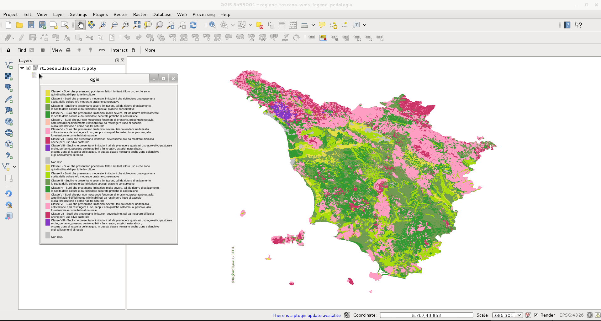
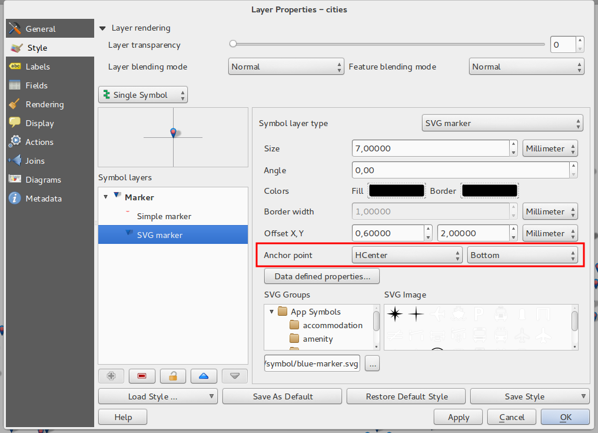
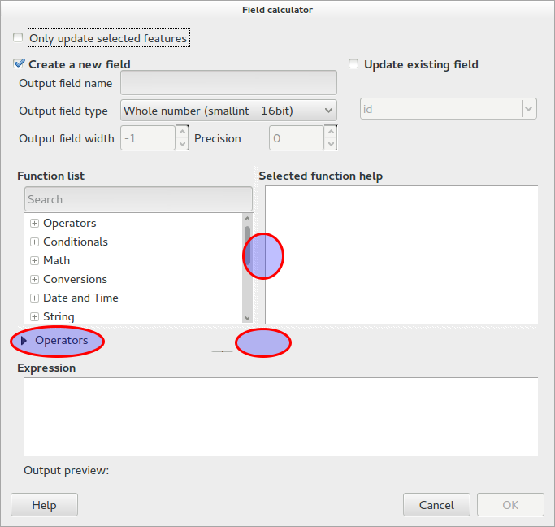

Modifications apportées par QGIS 2.2¶
Liste des changements dans la version QGIS 2.2.0. Une attention particulière a été portée sur les performances et l’affinage, nous avons rajouté de nombreuses fonctionnalités et améliorations pour rendre l’interface plus cohérente et professionnelle (et nous l’espérons, plus simple à utiliser). Le composeur de cartes (utilisé pour l’impression de cartes) a été l’objet de beaucoup d’efforts pour en faire un outil plus adapté à créer de superbes sorties cartographiques.
A chaque fois que de nouvelles fonctionnalités sont ajoutées au logiciel, elles introduisent potentiellement de nouveaux bugs. Donc, si vous avez des problèmes avec cette version, reportez-les en utilisant le système de suivi de bugs de QGIS.
Nous souhaitons remercier tous les développeurs, rédacteurs, testeurs et les nombreuses personnes qui ont donné volontairement de leur temps (ou financé des personnes pour le faire).
From the QGIS community we hope you enjoy this release! If you wish to donate time, money or otherwise get involved in making QGIS more awesome, please wander along to qgis.org and lend a hand!
Enfin nous souhaitons remercier nos sponsors officiels pour les soutiens financiers inestimables à ce projet :
- Sponsor GOLD : Asia Air Survey, Japon
- Sponsor SILVER : G.A.I.A. mbH, Allemagne
- Sponsor SILVER : State of Vorarlberg, Autriche
- Sponsor BRONZE : www.molitec.it, Italie
- Sponsor BRONZE : www.argusoft.de, Allemagne
A current list of donors who have made financial contributions large and small to the project can be seen on our donors list.
If you would like to make a donation or sponsor our project, please visit our sponsorship page for details. QGIS is Free software and you are under no obligation to do so. Sponsoring QGIS helps us to fund our six monthly developer meetings, maintain project infrastructure and fund bug fixing efforts.
- Options de l’application et des projets
- Prestataires de données
- Numérisation
- Général
- Composeur de cartes
- Fonctionnalité: Amélioration de la gestion des bordures de carte en zebra
- Fonctionnalité: Gestion de la rotation des éléments
- Fonctionnalité: Ajout d’une échelle dans le composeur et amélioration des règles
- Fonctionnalité: Génération d’un fichier World
- Fonctionnalité: Travailler avec plusieurs éléments
- Fonctionnalité: Amélioration de l’atlas de cartes
- Fonctionnalité: Amélioration de la sélection des objets
- Fonctionnalité: Meilleure navigation dans les compositions
- Fonctionnalité: Améliorations de style sur les pages et les formes
- QGIS Server
- Symobologie
- Fonctionnalité: Gestion du remplissage par gradient
- Fonctionnalité: Gestion des étiquettes pour les rasters à palette de couleur
- Fonctionnalité: Les rampes de couleurs peuvent être inversées
- Fonctionnalité: Copier-Coller des représentations par ensemble de règles
- Fonctionnalité: Généralisation à la volée des éléments
- Fonctionnalité: Des points d’ancrage peuvent être paramétrés pour les couches à marqueurs
- Fonctionnalité: Cartes thématiques basées sur des expressions
- Fonctionnalité: Gestion des expressions pour la taille et les attributs des diagrammes
- Fonctionnalité: Clause Else dans la représentation par ensemble de règles
- Fonctionnalité: Gestion du contour interne des polygones
- Interface utilisateur
Options de l’application et des projets¶
Fonctionnalité: Gestion des mesures en Miles Nautiques¶
Bon pour les marins, vous pouvez maintenant mesurer les distances en miles nautiques. Pour l’activer, utilisez le panneau Préférences --> Options --> Outils cartographiques.

Prestataires de données¶
Fonctionnalité: Gestion des relations 1,n¶
Cette version introduit la possibilité de définir des relations 1:n Les relations sont définies dans la fenêtre des propriétés du projet. Une fois les relations définies sur une couche, un nouvel élément apparait dans la vue formulaire de cette couche (par exemple, lors de l’identification d’une entité et l’ouverture du formulaire associé) et vous liste les entités qui lui sont reliées. Cela fournit un moyen puissant d’exprimer, par exemple, l’historique d’inspection le long d’un pipeline ou d’un tronçon de route. Vous trouverez de plus amples informations sur les relations ici..

Fonctionnalité: Outil d’export DXF¶
Un nouvel outil pour exporter en DXF a été ajouté au menu Projet.

Fonctionnalité: Coller en tant que nouvelle couche vecteur¶
It is a common activity in a GIS to create a sub-selection and then to
create a new layer from the selection. In QGIS you can already do
save selection as to save a layer from your selection, and now
offers functionality that allows you to create a new file or memory
layer from whatever is in your clipboard. Simply select some features,
copy them to your clipboard and then do Edit -> Paste features as
and choose either New vector layer or New memory layer from the
submenu. The best part of this new feature is that if you have some Well
Known Text (WKT) features in your clipboard from another app, you can
simply paste them into QGIS as a new layer now.

Fonctionnalité: Légende WMS dans la liste des couches et le composeur¶
Avant QGIS 2.2 le fournisseur de données WMS n’était pas capable d’afficher une légende dans la liste des couches de la carte. De manière similaire, cette légende était également absente du composeur de carte. QGIS 2.2 règle ces deux problèmes.
Cliquer sur la légende de la couche ouvrira un cadre avec la légende en pleine résolution. La légende affichera une information contextuelle en fonction de l’échelle. La légende WMS sera affichée uniquement si le serveur WMS dispose de la fonction GetLegendGraphic. La résolution de la légende peut être modifiée dans les options de Canevas & Légende.

Numérisation¶
Fonctionnalité : Outil de numérisation « Remplir l’anneau »¶
Ce nouvel outil est utilisé pour découper des trous dans les polygones et les remplir automatiquement avec de nouvelles entités. Si vous maintenez Ctrl en finalisant l’entité, les attributs de l’entité parente y sont recopiées.

Général¶
Fonctionnalité: Sauvegarde des dernières expressions¶
Le constructeur d’expressions conservera en mémoire les 20 dernières expressions.

Fonctionnalité: Coller des données WKT depuis le presse-papier¶
QGIS peut maintenant coller et créer une nouvelle entité depuis une description WKT trouvée dans le presse-papier. Copiez simplement du WKT et collez-le dans une couche éditable. Vous pouvez également créer une nouvelle couche en sélectionnant Éditer --> Coller comme --> Nouvelle couche mémoire.
Composeur de cartes¶
Fonctionnalité: Amélioration de la gestion des bordures de carte en zebra¶
Vous pouvez maintenant définir les couleurs du contour en Zebra des éléments carte du composeur de carte.

Fonctionnalité: Gestion de la rotation des éléments¶
Chaque type d’élément du composeur peut maintenant subir une rotation, y compris les barres d’échelles, les tables et les légendes. Par exemple, vous pouvez tourner une étiquette de votre composition afin qu’elle s’intègre au mieux à votre mise en page (comme illustré). Le redimensionnement des éléments en rotation a aussi été consolidé.

Fonctionnalité: Ajout d’une échelle dans le composeur et amélioration des règles¶
L’apparence des règles a été améliorée en ajustant la logique de mise à l’échelle et en ajoutant des divisions intermédiaires sur la règle, tout en disposant d’un texte orienté sur les règles verticales. Il existe également une nouvelle action du composeur pour afficher/montrer les règles. Vous pouvez maintenant zoomer rapidement à l’échelle maximale de la page en utilisant l’outil Zoomer sur l'emprise de la barre d’outils. La fenêtre du composeur vous permet maintenant de basculer l’échelle de la page via un nouveau contrôle d’échelle dans la barre d’état. De plus, un nouvel indicateur a été ajouter pour vous indiquer au pixel près la position de votre curseur. Les boutons Fermer et Aide ont été supprimés du bas du composeur pour vous offrir une plus grande surface d’écran lorsque vous travaillez sur vos compositions.

Fonctionnalité: Génération d’un fichier World¶
Dans le composeur, vous pouvez maintenant créer des cartes géo-référencées ! Choisissez simplement l’élément de carte dans l``Onglet Composition`` et exportez alors votre carte dans un fichier PNG. Un fichier World d’accompagnement sera écrit vous permettant d’exporter votre composition dans QGIS en tant que couche raster.

Fonctionnalité: Travailler avec plusieurs éléments¶
Nous avons ajouté la possibilité de déplacer et redimensionner plusieurs éléments simultanément. Vous pouvez maintenir Shift lors d’un redimensionnement afin de conserver les proportions de l’élément, ou maintenir Ctrl pour redimensionner à partir du centre de l’objet. Ces raccourcis s’appliquent également lors du déplacement des éléments, maintenir Shift en déplacement un élément permet de contraindre le mouvement horizontalement ou verticalement et maintenir Ctrl temporairement désactive l’accrochage de l’élément. Vous pouvez également maintenir Shift appuyé lorsque vous pressez une touche de navigation pour décaler plus fortement les éléments sélectionnés.
Fonctionnalité: Amélioration de l’atlas de cartes¶
Vous pouvez maintenant obtenir un aperçu de chaque page de l’atlas de cartes générées dans le composeur. Lorsque vous êtes dans ce mode de prévisualisation, vous pouvez extraire la page courante sans générer entièrement l’atlas. Vous pouvez également modifier l’emprise de la carte ou l’échelle pour chaque élément lorsque vous prévisualisez la page d’atlas. Les paramètres de la carte d’atlas ont été déplacés du panneau d’atlas vers le panneau des propriétés de la carte de manière à ce que plus d’une carte puisse être contrôlée par la génération d’atlas. Il existe une nouvelle option permettant de centrer automatiquement la carte d’aperçu ce qui est pratique lors de la création de cartes d’atlas. Il y a plus d’information contextuelle pour vous aider à ajuster votre symbologie selon le fait que l’élément est issu de l’atlas ou non. Consultez cet article pour plus d’informations sur le sujet.

Fonctionnalité: Amélioration de la sélection des objets¶
Vous pouvez maintenant sélectionner plus d’un objet en cliquant et en dessinant une emprise autour des objets. Il existe des raccourcis pour ajouter à la sélection (maintenir Shift tout en dessinant), retirer de la sélection (maintenir Ctrl tout en dessinant) et basculer vers le mode de sélection « à l’intérieur » (maintenir Alt tout en dessinant). Cliquer sur un élément déjà sélectionné avec Shift le supprimera de la sélection. Il existe également des raccourcis et des entrées de menu pour sélectionner tous les éléments, vider la sélection ou l’inverser. Il est maintenant également possible de sélectionner les éléments qui sont cachés en dessous d’autres éléments en utilisant Ctrl ou en utilisant l’entrée du menu Edit « Sélectionner le prochain élément au-dessus/au-dessous ».
Fonctionnalité: Améliorations de style sur les pages et les formes¶
Vous pouvez maintenant contrôler le style du fond de la composition à l’aide de toute la gamme des options de symbologie de QGIS. Il est maintenant possible d’exporter les compositions avec un fond transparent (ou semi-transparent). Les formes (rectangles, triangles et ellipses) peuvent également être stylées en utilisant les mêmes options que pour les couches vecteurs polygones. Vous pouvez également styler le fond de page ou les formes en utilisant des paramètres dépendant des données de l’entité courante de l’atlas ! Il existe également une nouvelle option pour arrondir les coins des formes en rectangle.
QGIS Server¶
Fonctionalité: Gestion du WCS par QGIS Server¶
QGIS-Server gère déjà les standards suivants: Web Map Service (WMS version 1.3.0 et 1.1.1), Web Feature Service (WFS version 1.0.0) et Web Feature Service with Transaction (WFS-T). Avec cette nouvelle version de QGIS, vous pouvez maintenant fournir des couches rasters utilisant le standard Web Coverage Service (WCS version 1.0.0).

Symobologie¶
Fonctionnalité: Gestion du remplissage par gradient¶
Le remplissage par gradient vous permet de créer de meilleures cartes qu’auparavant. Cette fonctionnalité dispose de nombreuses options permettant une grande flexibilité dans la manière d’appliquer le gradient. Cela inclut:
- Remplissage basé sur deux couleurs ou sur une rampe
- Origine du gradient basée sur le canevas de carte ou sur l’objet
- Gradient dont l’origine est le centroïde de l’élément
- Types de gradients de forme conique, linéaire et radiale
- Les propriétés du gradient peuvent être définies par les données (par des expression ou par la colonne d’une table)
Plus d’informations sur le remplissage par gradients ici.

Fonctionnalité: Gestion des étiquettes pour les rasters à palette de couleur¶
Les rasters qui utilisent une palette de couleur fixe (en particulier, les couvertures de sol) peuvent se voir attribuer des étiquettes de catégories qui seront affichées dans la légende de la carte ainsi que dans la légende du composeur.

Fonctionnalité: Les rampes de couleurs peuvent être inversées¶
Une nouvelle option a été ajoutée à la boîte de dialogue de symbologie pour vous permettre d’inverser une rampe de couleur lors de sa création.

Fonctionnalité: Copier-Coller des représentations par ensemble de règles¶
Dans le rendu par ensemble de règles, vous pouvez maintenant effectuer un clic-droit sur une règle pour la copier et la coller en tant que nouvelle règle.

Fonctionnalité: Généralisation à la volée des éléments¶
QGIS 2.2 gère la simplification de la géométrie des entités à la volée. Cela permet d’améliorer la vitesse d’affichage de nombreuses entités complexes à large échelle. L’option peut être activée ou désactivée dans les propriétés des couches. Un nouveau paramètre global permet également d’activer la simplification par défaut au moment de chargement de chaque couche. Note : La simplification de la géométrie peut introduire des incohérences de rendu tels que des recouvrements entre polygones ou des placements imprécis lors de l’utilisation de décalage pour le rendu de couches de symboles.

Fonctionnalité: Des points d’ancrage peuvent être paramétrés pour les couches à marqueurs¶
Lorsque vous définissez une symbologie pour une couche de marqueurs (par exemple, une couche de point symbolisée par des marqueurs SVG), vous pouvez maintenant indiquer quelle partie de l’image doit correspondre au point d’ancrage. Par exemple, vous pouvez indiquer que le coin inférieur-droit de l’image doit coincider avec la position de l’élément. Vous pouvez également utiliser les propriétés définies par les données pour disposer de cette propriété lors du rendu sur un attribut d’une table de donnée pour cette couche (ou en utilisant une expression)

Fonctionnalité: Cartes thématiques basées sur des expressions¶
Les cartes thématiques faites avec le rendu Catégorisé ou Gradué peuvent désormais être créées en utilisant le résultat d’une expression. Dans la fenêtre Propriétés des couches vectorielles, le sélecteur de colonne accueille un constructeur d’expression. Dès maintenant, vous n’avez plus besoin d’écrire l’attribut de la classification dans une nouvelle colonne de votre table si vous souhaitez que l’attribut de classification soit un composite de plusieurs champs, ou une formule quelconque.

Fonctionnalité: Gestion des expressions pour la taille et les attributs des diagrammes¶
Vous pouvez maintenant utiliser une expression pour définir la taille et les attributs lorsque vous utilisez les fonctions de diagramme de QGIS. Pour plus d’informations consultez la Pull Request suivante Pull 1039

Fonctionnalité: Clause Else dans la représentation par ensemble de règles¶
Le rendu Ensemble de règles propose maintenant une règle Else qui sera exécutée si aucune des autres règles du même niveau n’est appliquée. Les règles Else peuvent être emboîtées comme les autres règles.
Un exemple pourrait être :
type = 'water' (style grey)ELSE (style red)
Fonctionnalité: Gestion du contour interne des polygones¶
La fonction de limitation du contour du polygone à l’intérieur du polygone a été ajoutée (de manière à ce que le contour n’empiète pas sur un polygone voisin).
Plus d’informations sur cette fonctionnalité dans la seconde partie de cet article.

Interface utilisateur¶
Fonctionnalité: Amélioration des boîtes de dialogue des propriétés¶
Toutes nos boîtes de dialogue de propriétés ont vu leur menus mis à jour de manière à avoir un rendu plus lisse avec une barre latérale de couleur inversée. C’est purement cosmétique mais cela permet de savoir plus facilement dans quel contexte est la boîte de dialogue.

Fonctionnalité: Améliorations sur la boîte de dialogue des expressions¶
Nous avons réalisé quelques améliorations sur la boîte de dialogue des expressions: les utilisateurs avancés peuvent maitenant masquer les boutons des opérateurs. Il y a maintenant quelques nouveaux séparateurs entre la liste des fonctions et l’emplacement de l’aide et aussi entre l’expression et la liste des fonctions. Consultez la Pull Request originelle pour plus de détails.

Fonctionnalité: Nouveaux raccourcis-clavier¶
Nous avons mis à jour les raccourcis clavier de QGIS de manière à rendre plus efficace les tâches répétitives.
Ctrl-d- Supprime les couches sélectionnées de la liste des tables>- Sélectionne le prochain sommet lorsqu’on utilise l’outil de nœuds<- Sélectionne le sommet précédent lorsqu’on utilise l’outil de nœudsSupprouBackspace- supprime les éléments sélectionnés (vous pouvez annuler ces actions) ou un nœud lorsque l’outil de nœuds est utilisé.- F5 actualise le canevas de carte (au lieu de Ctrl-r)
Consultez également l’Issue 9094 et la Pull Request 1010 pour plus de détails.